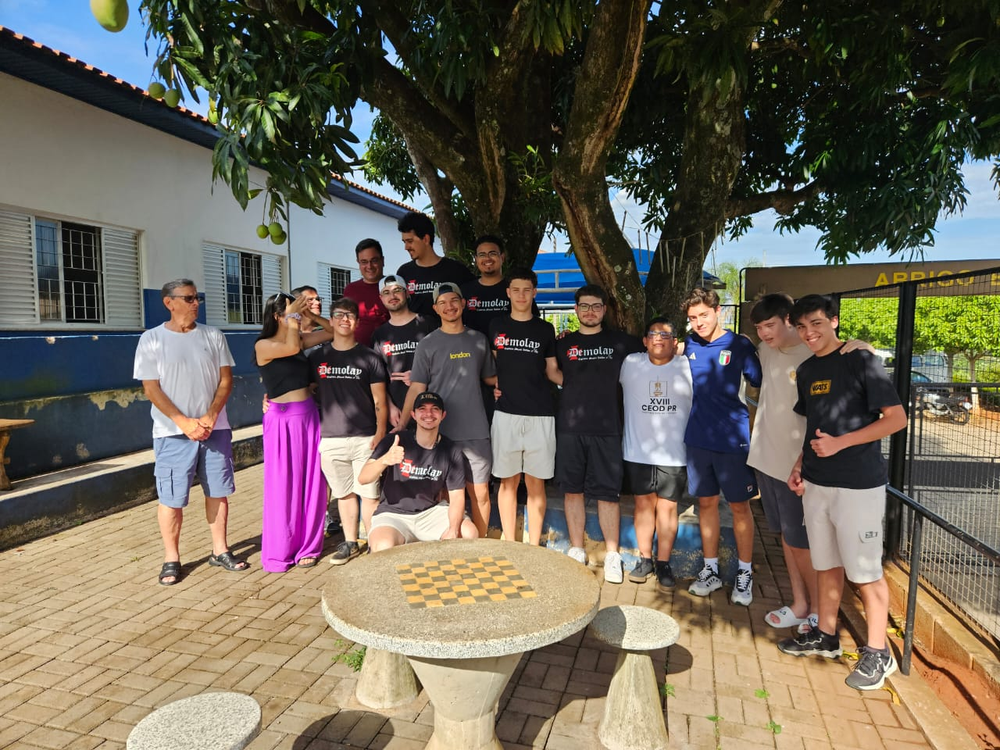

Sobre o Abrigo
O Abrigo Bom Pastor cuida de idosos em situação de vulnerabilidade, promovendo saúde, bem-estar e qualidade de vida.
Nossa Solução
Com o foco no ODS 3: Saúde e Bem-Estar, criamos este site para conectar pessoas dispostas a doar alimentos e contribuir com a saúde e nutrição dos idosos.
Faça a diferença com sua doação!Como Ajudar
- Doe alimentos diretamente no abrigo.
- Realize uma doação financeira.
- Compartilhe nossa causa nas redes sociais.